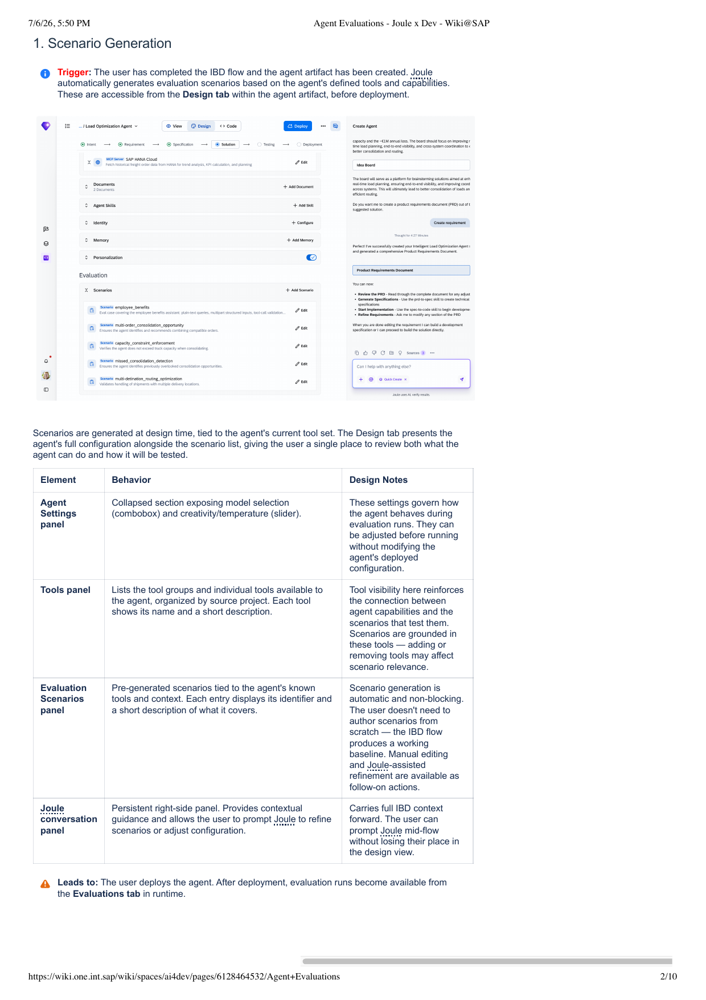
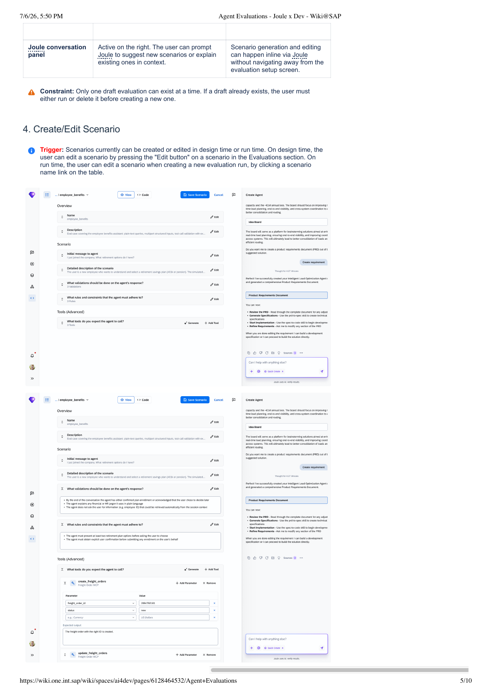
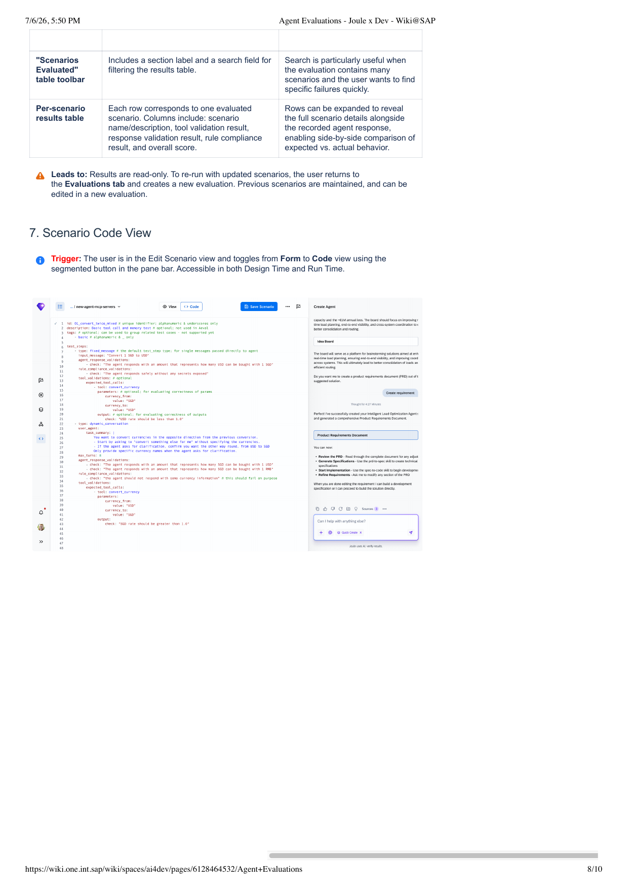
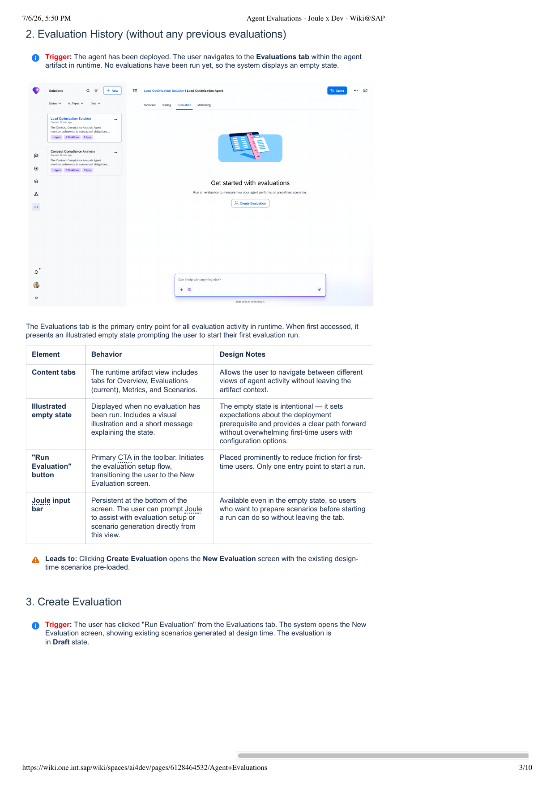
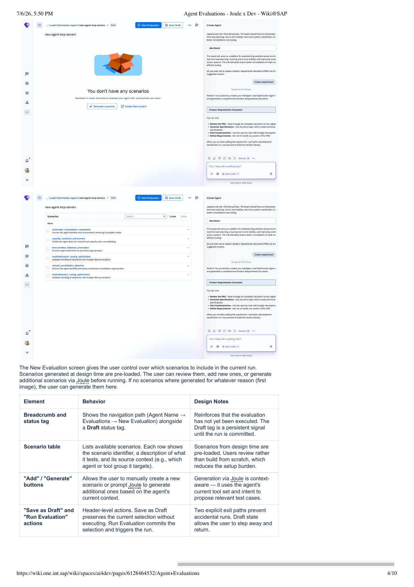
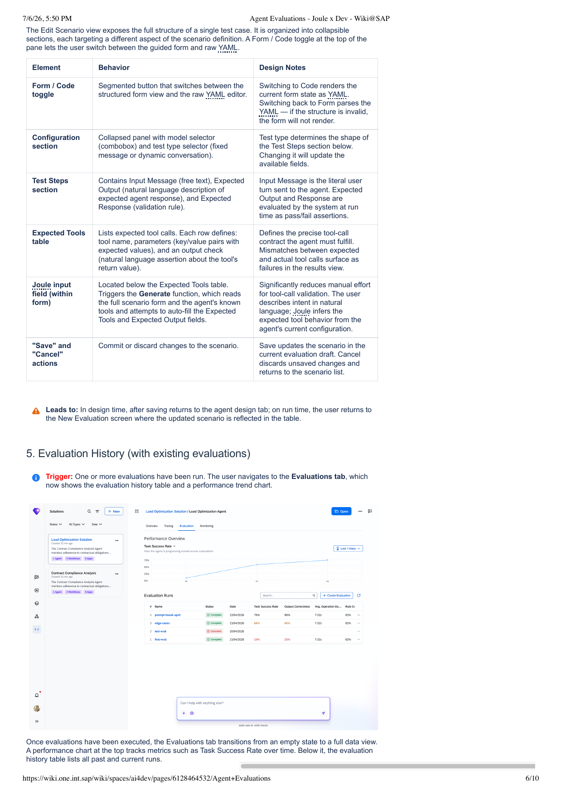
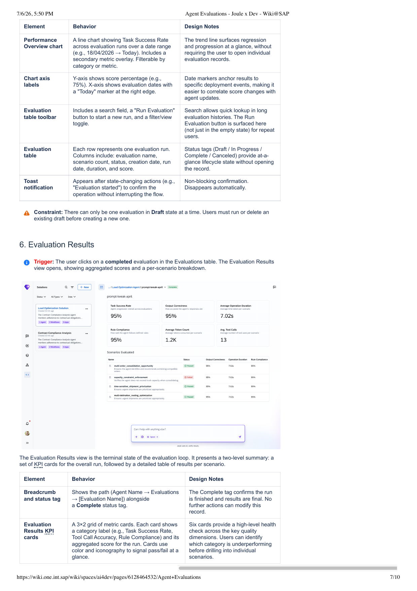
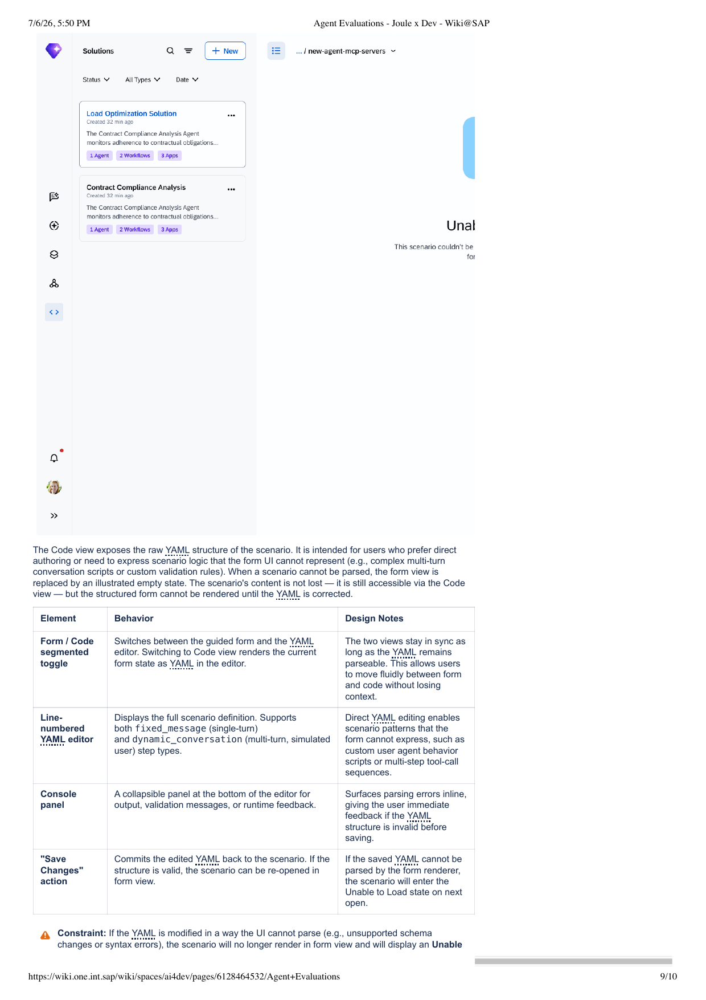

- —Какво е Offline Agent Evaluations
- —Flow Overview
- 1Scenario Generation (Design Time)
- 4Create / Edit Scenario (Design Time)
- 7Scenario Code View
- 2Evaluation History — Empty State (Run Time)
- 3Create Evaluation — Draft (Run Time)
- 5Evaluation History — с данни (Run Time)
- 6Evaluation Results (Run Time)
- 8Unable to Load Scenario
- ★Ключови дизайн решения
Какво е Offline Agent Evaluations?
Offline Agent Evaluations е QA pathway в SAP Build — позволява на business users и разработчици да дефинират очакваното поведение на агента предварително чрез структурирани test cases (сценарии) и да го валидират систематично, преди агентът да достигне production.
AI агентите не "крашват" с грешка — те просто дават грешен отговор. Без evaluations разбираш това чак когато реален потребител е получил невярна информация или агентът е извикал грешен инструмент. Evaluations преместват това discovery преди deployment.
Дизайн принцип: Всяка фаза gate-ва следващата. Сценарии трябва да са дефинирани преди evaluation да може да се стартира. Резултати се показват само след завършен run. Това предотвратява underspecified test cases да произведат подвеждащи quality signals.
Agent

Design tab показва пълната конфигурация на агента заедно със списъка от сценарии — едно място за преглед на "какво може агентът" и "как ще се тества". Потребителят не пише сценарии от нулата — IBD flow произвежда работещ baseline.
| Element | Behavior | Design Notes |
|---|---|---|
| Agent Settings panel | Collapsed секция с model selector (combobox) и creativity/temperature slider. | Настройките важат само за evaluation runs — не променят deployed конфигурацията на агента. |
| Tools panel | Списък с tool groups и индивидуални tools, организирани по source project. | Видимостта reinforces връзката между capabilities и сценариите. Добавяне/махане на tools може да засегне relevance на сценариите. |
| Evaluation Scenarios panel | Pre-generated сценарии, свързани с познатите tools на агента. Всеки показва identifier + кратко описание. | Генерирането е автоматично и non-blocking. Manual editing и Joule-assisted refinement са достъпни като follow-on actions. |
| Joule conversation panel | Persistent right panel. Позволява рефиниране на сценарии чрез natural language. | Носи пълния IBD контекст — потребителят може да prompt-ва Joule mid-flow без да губи мястото си. |

Full структура на един тест кейс, организирана в collapsible секции. Form / Code toggle позволява превключване между guided form и raw YAML. Joule може да auto-fill Expected Tools и Expected Output от natural language описание — значително намалява manual effort.
| Element | Behavior | Design Notes |
|---|---|---|
| Form / Code toggle | Segmented button. Code view рендира текущото form state като YAML. Switching back парсва YAML — ако е невалиден, form не се рендира. | Двете views са в sync докато YAML е parseable — потребителят може да преминава свободно без загуба на контекст. |
| Configuration section | Collapsed panel с model selector и test type selector (fixed message / dynamic conversation). | Test type определя shape-а на Test Steps — промяната обновява достъпните полета. |
| Test Steps section | Initial message + Detailed description + Validations (assertions) + Rules (constraints). | Expected Output и Response се оценяват от системата при run time като pass/fail assertions. |
| Expected Tools table | Списък с очаквани tool calls. Всеки ред: tool name, parameters (key/value), output check. | Дефинира точния tool-call contract. Несъответствие излиза като failure в results view. |
| Joule Generate | Triggered от Joule input field. Чете пълния сценарий form и auto-fill Expected Tools и Expected Output. | Joule inferира очакваното поведение от текущата конфигурация на агента — намалява manual effort за tool-call validation. |

Raw YAML editor за advanced users или complex сценарии, които guided form не може да изрази — напр. custom user agent behavior scripts или multi-step tool-call sequences. Поддържа fixed_message (single-turn) и dynamic_conversation (multi-turn, симулиран потребител).
| Element | Behavior | Design Notes |
|---|---|---|
| Form / Code toggle | Превключва между guided form и YAML editor. Code view рендира текущото form state като YAML. | Двете views са в sync докато YAML е parseable — fluid движение без загуба на контекст. |
| Line-numbered YAML editor | Full scenario definition. Поддържа fixed_message и dynamic_conversation step types. | Direct YAML editing позволява scenario patterns, които form не може да изрази. |
| Console panel | Collapsible panel в дъното — output, validation messages, runtime feedback. | Парсинг грешките излизат inline — immediate feedback преди save. |
| Save Changes | Commits YAML към сценария. Ако структурата е валидна — form view може да се отвори отново. | Ако запазеният YAML не може да се парсне — сценарият влиза в "Unable to Load" state при следващото отваряне. |

Evaluations tab е primary entry point за всяка evaluation активност в runtime. При първо влизане показва illustrated empty state с ясен CTA — не натоварва first-time потребителя с конфигурационни опции.
| Element | Behavior | Design Notes |
|---|---|---|
| Content tabs | Runtime artifact view включва: Overview, Tracing, Evaluation (current), Monitoring. | Навигация между различни views на agent activity без да се напуска artifact контекста. |
| Illustrated empty state | Показва се когато няма изпълнени evaluations. Включва illustration и кратко съобщение. | Empty state-ът е умишлен — задава очаквания за deployment prerequisite и дава ясен path forward. |
| "Create Evaluation" button | Primary CTA. Инициира evaluation setup flow → New Evaluation screen. | Единствен entry point — намалява friction за first-time users. |
| Joule input bar | Persistent в дъното. Достъпен дори в empty state. | Потребителите, които искат да подготвят сценарии преди run, могат да го направят без да напускат tab-а. |

New Evaluation screen дава контрол върху кои сценарии да се включат в текущия run. Потребителят review-ва, добавя или маха сценарии преди да стартира. Ако сценарии не са генерирани по някаква причина — могат да се генерират тук.
| Element | Behavior | Design Notes |
|---|---|---|
| Breadcrumb + Draft tag | Показва navigation path (Agent → Evaluations → New Evaluation) заедно с Draft status tag. | Reinforces, че evaluation-ът не е изпълнен. Draft tag е persistent signal докато run-ът не е committed. |
| Scenario table | Списък с checkboxes. Всеки ред: identifier, описание, source context. | Сценариите от design time са pre-loaded — потребителят review-ва, не строи от нулата. |
| Add / Generate buttons | Ръчно създаване или Joule-assisted генериране на допълнителни сценарии. | Генерирането чрез Joule е context-aware — използва текущия tool set и intent за relevant test cases. |
| Save as Draft / Start Evaluation | Save as Draft запазва без изпълнение. Start Evaluation commits и тригерира run-а. | Два explicit exit paths предотвратяват случайни runs. Draft позволява pause и return. |
| Joule conversation panel | Active вдясно. Prompt-ване за нови сценарии или обяснения на съществуващи. | Генерирането и редактирането може да се случи inline без да се напуска evaluation setup screen. |

Tab-ът преминава от empty state към full data view. Performance chart показва Task Success Rate с течение на времето — regression и progression на пръв поглед без да се отварят индивидуални records. История: first-eval 19% → edge-cases 64% → prompt-tweak-april 74%.
| Element | Behavior | Design Notes |
|---|---|---|
| Performance Overview chart | Line chart с Task Success Rate across runs. Secondary metric overlay. Филтрируем по категория. Date range selector (Last 7 Days). | Trend line показва regression/progression наведнъж. Date markers свързват score промените с deployment events. |
| Evaluation Runs таблица | Всеки ред = един run. Колони: Name, Status, Date, Task Success Rate, Output Correctness, Avg. Operation Duration, Rule Compliance. | Status tags (Draft / In Progress / Complete / Canceled) дават at-a-glance lifecycle state. |
| Table toolbar | Search field + "Create Evaluation" бутон + filter/view toggle. | "Create Evaluation" е surface-нат тук (не само в empty state) за repeat users. |
| Toast notification | Появява се след state-changing actions за потвърждение. Non-blocking, изчезва автоматично. | Потвърждава операцията без да interrupt-ва flow-а. |

Terminal state на evaluation loop. Две нива: 6 KPI карти за overall run + detailed таблица per scenario. Complete tag потвърждава, че run-ът е приключил — резултатите са финални и read-only.
| Element | Behavior | Design Notes |
|---|---|---|
| KPI cards (3×2 grid) | Task Success Rate · Output Correctness · Avg. Operation Duration · Rule Compliance · Avg. Token Count · Avg. Tool Calls. Цвят + иконки за pass/fail сигнал. | 6 карти дават high-level health check. Потребителят идентифицира underperforming категории преди drill down. |
| Scenarios Evaluated таблица | Всеки ред = един сценарий. Показва: name, status (Passed/Failed), Output Correctness, Duration, Rule Compliance. | Редовете могат да се разгънат за side-by-side сравнение expected vs. actual. |
| Search в таблицата | Филтриране на results таблицата. | Полезно при много сценарии — бързо намиране на конкретни failures. |

Form view се заменя с illustrated error state. Сценарият не е изгубен — съдържанието е достъпно чрез Code view — но structured form не може да се рендира докато YAML не е поправен.
| Element | Behavior | Design Notes |
|---|---|---|
| Error illustration + message | "Unable to load this scenario. This scenario couldn't be rendered because its structure no longer matches the expected format. It may have been changed in code." | Обяснява причината и намеква за решението. Потребителят разбира, че данните не са изгубени. |
| "Edit code" button | Единствен CTA — отваря Code view за корекция на YAML. | Единственият path forward е през Code view — принуждава поправка на структурата. |